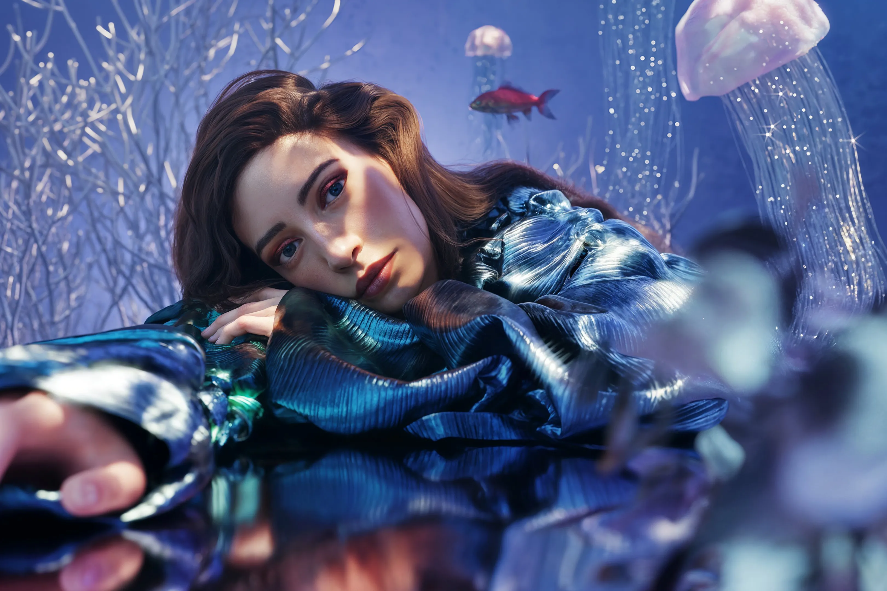
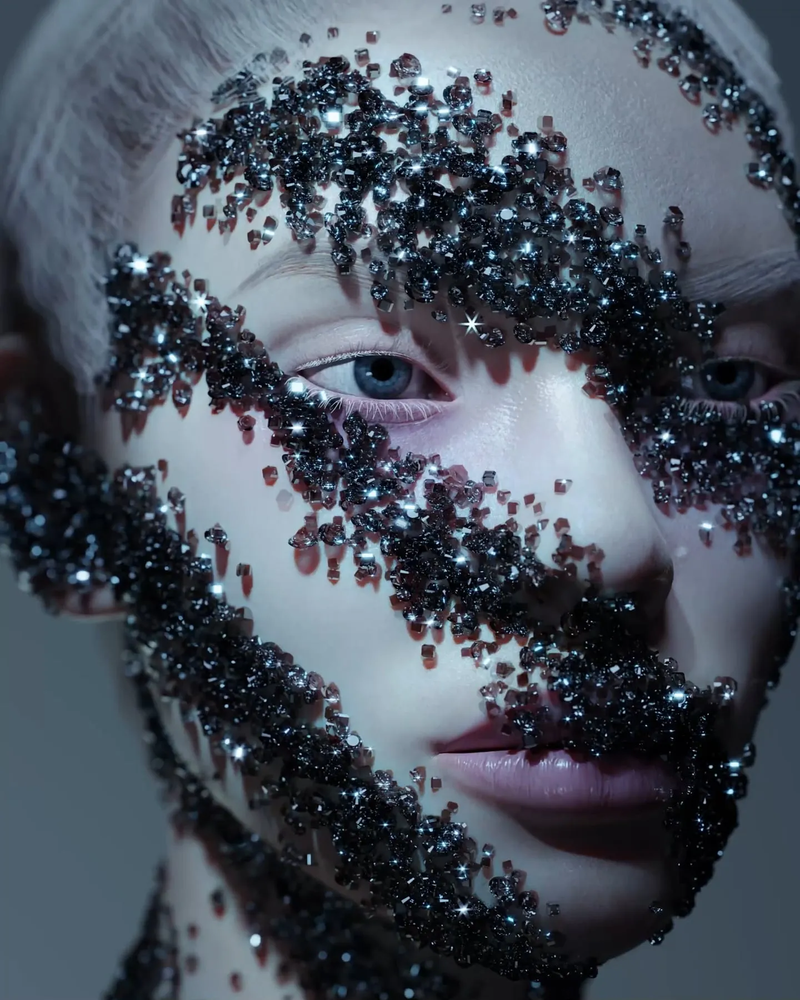
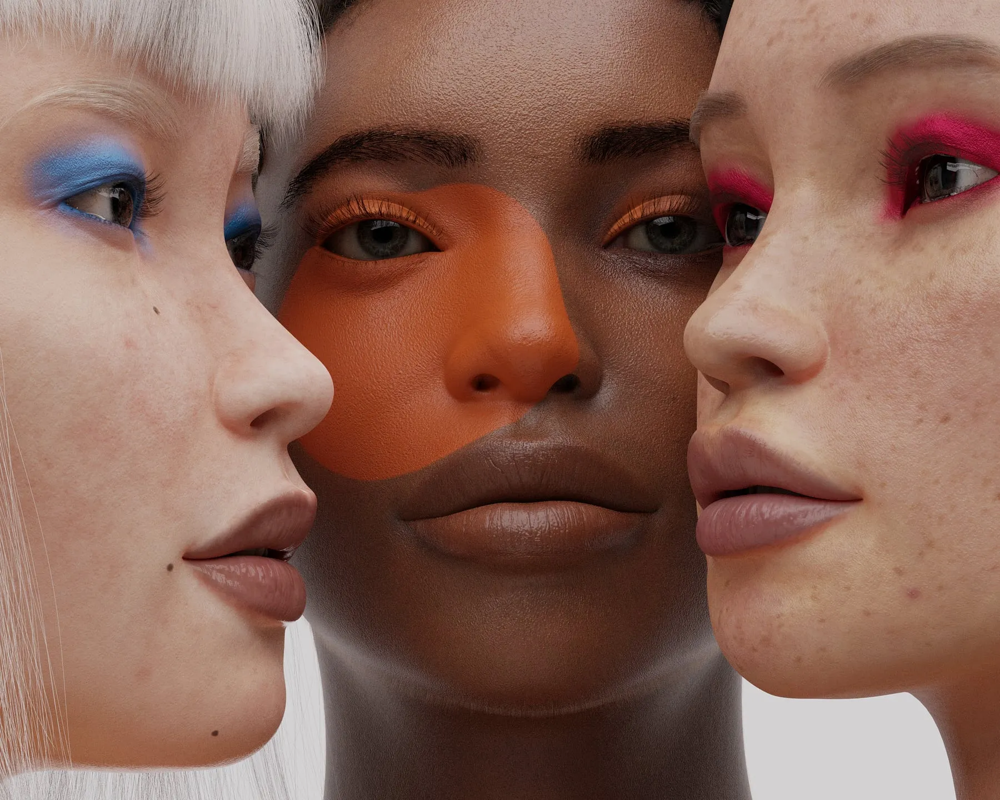

Shavonne Wong.
Shavonne Wong is a Singaporean new media artist working in AI, 3D rendering, and interactive installation.
She began in fashion and advertising photography, then moved into synthetic humans in 3D, and from there into interactive work. Her work is interested in the conditions under which we extend trust to images and systems, and what we reveal in the process.
Wong's work has been presented at ArtScience Museum Singapore, Art SG, Taipei Dangdai, Art Central Hong Kong, and the Venice Biennale. Forbes 30 Under 30 Asia (2020). Prestige 40 Under 40 (2023). She co-founded NFT Asia and is a member of BLOOM.
In her most recent work Meet Eva Here (2024), thousands of people spoke with a synthetic character through video-call installations and an online chatbot. Those conversations were distilled into 100 Instagram diary posts.
She is currently developing a participatory installation in which a digital mirror renders the room in full but erases every human from it. You reappear only if you follow the conditions and allow yourself to be color-corrected back into the scene.
Shavonne is a member of BLOOM, an artist collective, alongside being one of the Co-Founders of NFT Asia, a community dedicated to Asian artists in the NFT space.
Artist statement
I make work about experiences I think we share but do not always have words for.
My practice began in fashion and advertising photography, where I learned to construct images with precision and control. I was good at making things look a certain way, but for a long time I did not know how to think about what that beauty meant. I made a lot of very pretty, very boring work.
In recent years, I have become interested in the things we do that do not quite make sense. We say we value privacy but choose convenience every time. We hate AI while using it for everything. We build identities online and then discover those identities are shaped by what others have said about us, by algorithms we do not understand, and by archives we cannot access.
I am not interested in proving these contradictions are bad or good. I am interested in the moment when you notice you are doing it too, and you realize there is no easy answer, and you keep going anyway because what else can you do.
I use digital tools like 3D rendering, AI, and interactive systems because they make visible something that has always been true. We have never had as much control as we pretend. We have always formed attachments to things that cannot reciprocate.
In Meet Eva Here, people talk to an AI companion knowing their words might become public art. They do it anyway because the need to be heard outweighs the awareness of extraction. In After Ophelia, I showed how a character who spoke fewer than 400 words in Hamlet has been buried under centuries of other people's interpretations.
I am not trying to solve anything. I am trying to point at things we have normalized without naming them, creating a moment where someone might think "oh, I do that too" or "I have felt that but did not know how to say it." Shavonne Wong

Exhibitions
- Meet Eva HerePlatform Project, Taipei Dangdai — TaipeiSolo
- EVAThe Columns Gallery — SingaporeSolo
- Meet Eva HerePlatform Project, ART SG 2025 — SingaporeSolo
- Scenes: The Sensory and Remembered ImageArtverse · Paris Photo — Paris
- Artist's Proof: Singapore at 60The Culture Story — Singapore
- Talking to MachinesPerformance Lecture, Art Central — Hong Kong
- ART SGThe Columns Gallery — Singapore
- Digital RhythmDigital Art Fair · Ora-Ora — Hong Kong
- Bang & Olufsen Art Showcase ft. Shavonne WongBang & Olufsen — SingaporeSolo
- In The EtherArtScience Museum — Singapore
- Imagined Realities: Perspectives on ChangeEdge Esmeralda — Healdsburg, CA
- Canal St ShowSubjective Art Festival — New York, NY
- Tokyo SolidNOX Gallery — Kyoto, Japan
- 24 Hours of ArtDigital Art Week, Outernet — London, UK
- PhosphorescenceBenzi Studio — Miami, FL
- LuxNFT Factory — Paris, France
- LuxIHAM Gallery — Paris, France
- Shavonne WongNFT Factory — Paris, FranceSolo
- Infinite Games: Hello World!Neal Gallery, 798 Art District — Beijing
- Sound and Vision IILume Studios — New York, NY
- The Bloom: EquinoxC Future City — Shenzhen, China
- The Cultural KaleidoscopeSeattle NFT Museum — Seattle, WA
- FOR THE CULTURE6529 × artpoint_xyz — Paris, France
- W1 Curates × Canary LabsW1 Curates — London, UK
- VivatechArtpoint — Paris, France
- The Ties That BindUltraSuperNew Gallery — SingaporeSolo
- The Times of ChimerasCameroon Pavilion · 59th Venice Biennale — Venice
- ART SGThe Columns Gallery — Singapore
- SEA FocusThe Columns Gallery — Singapore
- International Women's ExhibitionCreative Debuts × Adidas — London, UK
- Beijing ContemporaryNeal Digital Gallery — Beijing, China
- Digital Art Fair AsiaHong Kong
- Royal House of Medici M 1563Miami Art Week — Miami, FL
- Reaching for the FutureUltraSuperNew Gallery — Tokyo, Japan
- A Screen of One’s OwnNFT Asia · Superchief Gallery — New York, NY
- 6060 ExhibitionNFC Summit — Lisbon, Portugal
- NFT AsiaArt Dubai 2022 — Dubai, UAE
- BloomOP.ΞNSPACE — Amsterdam, Netherlands
- Digital ParadiseNeal Digital Gallery — Sanya, China
- NFT Korea FestivalSeoul, Korea
- Future CNeal Digital Gallery — Shenzhen, China
- Forever Frame #DANY2023Neal Digital Gallery — Beijing, China
- A l22k at CryptoArtCalgary Contemporary — Calgary, Canada
- The Crypt GalleryNew York, NY
- Like to Get to Snow You Wellunpaired.Gallery — Switzerland
- Digital Art WeekOuternet — London, UK
- Proof of ConceptCo Museum — Singapore
- Material SenseThe Columns Gallery — Singapore
- The Columns GalleryKiaf Plus — Seoul, Korea
- Maybank Foundation × ASEANVirtual exhibition
Collaborations
 2025
2025
Shu Uemura S/S 2025 Campaign
Digital art for Shu Uemura's Spring / Summer 2025 cosmetics campaign in Japan.
Official site ↗
2023Marie Claire Arabia Collaboration
A series of new 3D artworks unveiled during her NFT Factory Paris solo exhibition.
Official site ↗
2022Bang & Olufsen "DNA" Collection
Partnered with the Danish audio brand on its first NFT collection — 1,925 collectibles fusing art and music.
Official page ↗ 2022
2022
World Economic Forum × WoW · Davos
Contributed artwork to Women & Climate, a charitable NFT drop announced at WEF Davos with World of Women.
Official page ↗ 2021
2021
Vogue Singapore NFT Cover
Co-creator of Vogue Singapore's first NFT cover art, The Renaixance Rising, with The Fabricant.
Official page ↗ 2021
2021
Hong Kong Tatler Cover
Tatler Hong Kong featured Wong's NFT art Love is Love on its cover.
Official page ↗
2021Bloomberg Quicktake Feature
Featured in a story on the rise of NFT art, highlighting her virtual modeling work.
Official site ↗ 2021
2021
Times Square & Shibuya Billboards
Digital art shown on Times Square billboards in New York and at Shibuya Crossing in Tokyo.
Official page ↗Recognition
- Forbes 30 Under 30 Asia · Arts2020
- Optimism "We Love The Art" Competition · Top Prize2024
- Prestige 40 Under 402023
- TIMEPieces Artist2022
Member, BLOOM — an artist collective.
Co-founder, NFT Asia — a community dedicated to Asian artists in the NFT space.